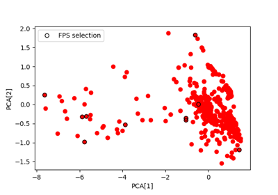
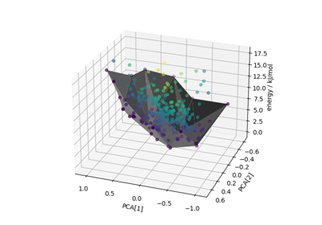
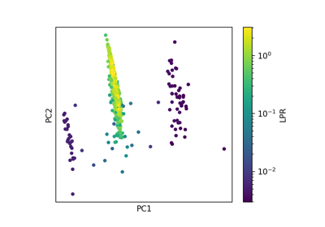
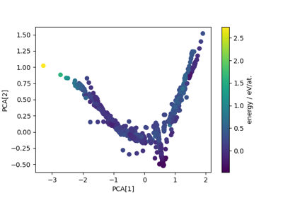

scikit-matter¶
scikit-matter is a toolbox of methods developed in the computational chemical and materials science community, following the scikit-learn API and coding guidelines to promote usability and interoperability with existing workflows. You can get the latest version from its github repository and learn how to use it from its documentation.
Sample and Feature Selection with FPS and CUR

Generalized Convex Hull construction for the polymorphs of ROY

LPR analysis for amorphous silicon dataset

PCA/PCovR Visualization for the rattled GaAs training dataset
